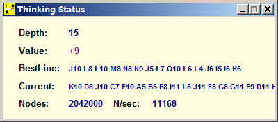

发个图，你懂的，不解释
首页
五子棋交流
#1 发个图，你懂的，不解释 作者：白河愁 发表时间：2010-11-15 2:29:33

#2 Re:发个图，你懂的，不解释 作者：真树 发表时间：2010-11-15 7:14:14
极地天神曾经猥琐地跟我远程 ，正常局面 他的黑石飙到了四五十万
#3 Re:发个图，你懂的，不解释 作者：屏蔽 发表时间：2010-11-15 8:15:11
我觉得1楼和2楼讨论的不是同一个事情……
#4 Re:发个图，你懂的，不解释 作者：周光乐 发表时间：2010-11-15 10:18:45
看不懂
#5 Re:发个图，你懂的，不解释 作者：菜包先生 发表时间：2010-11-15 13:33:52
计算深度15？？？？？？？
 传说中的4。5吗？
传说中的4。5吗？
#6 Re:发个图，你懂的，不解释 作者：菜包先生 发表时间：2010-11-15 13:36:35
我的黑石4。2倒是出现过这种情况，节点：2亿7000W
每秒速度：-43000
［此帖子已被 菜包先生 在 2010-11-15 13:38:00 编辑过］
#7 Re:发个图，你懂的，不解释 作者：极地剑客 发表时间：2010-11-15 18:36:14
2楼忽悠王~俺黑石速度只有5万而已.......6楼黑石4.2从俄罗斯进口的吗?1楼情况是小方又突破作者计算深度层次封锁了吗~?
#8 Re:发个图，你懂的，不解释 作者：夏百萧 发表时间：2010-11-15 19:22:35
这是哪版的？楼主，分享一下如何？
#9 Re:发个图，你懂的，不解释 作者：小滚滚 发表时间：2010-11-16 20:04:27
不懂
#10 Re:发个图，你懂的，不解释 作者：茗弈小九 发表时间：2010-11-19 15:13:49
不懂 ，没解释
#11 Re:发个图，你懂的，不解释 作者：不知取何名 发表时间：2010-11-23 16:46:30
小方真的很了不起啊